Shells
Week Seven: Shells — Video and Realism
[ ENG 6806 // FALL 2026 // WEEK OF OCTOBER 05, 2026 ]
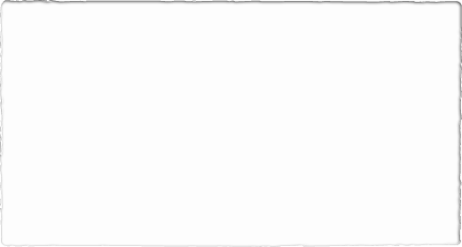
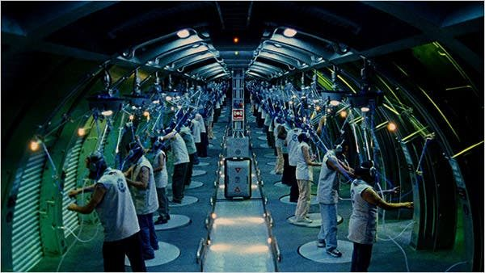
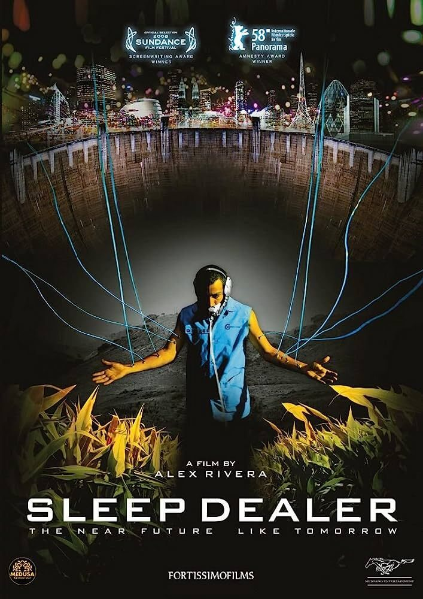
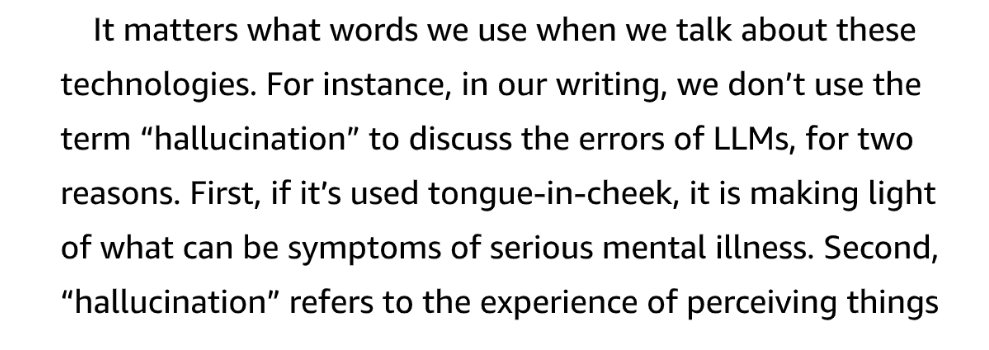
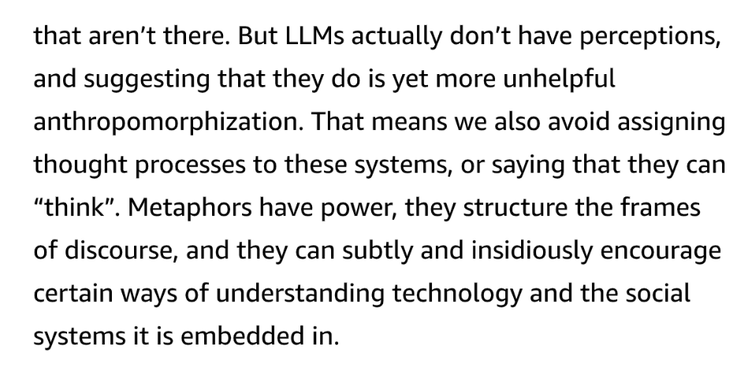
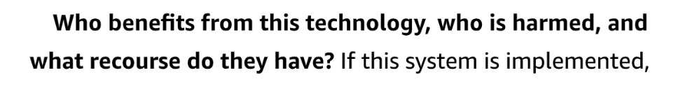
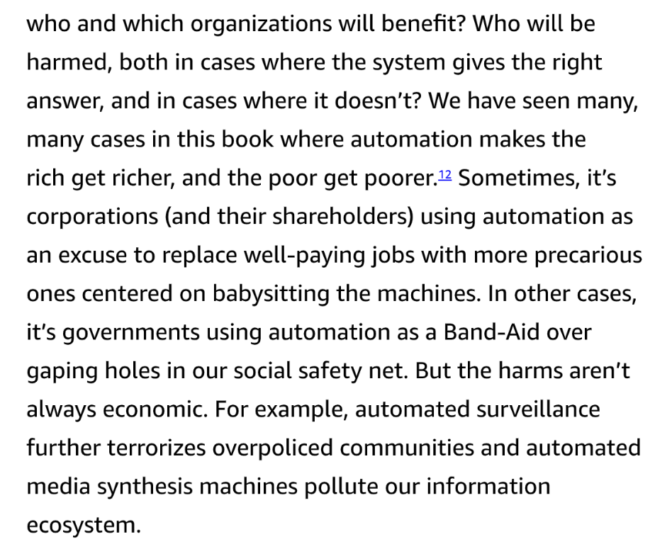
matrix, code, hacking, cyberpunk, data, digital, futuristic, neon, digital art, high tech, virtual reality, cyberspace, glitch, technology, sci fi, computer, programming, dark, binary, encryption, AI, network, security
OpenJourney and neuralframes
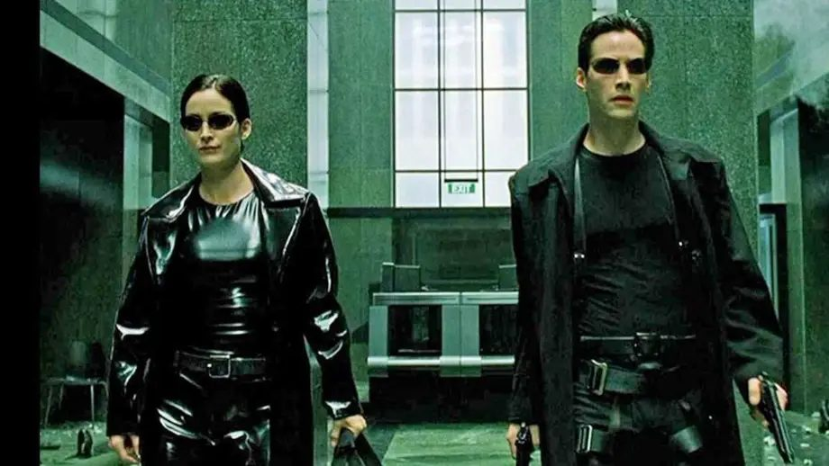
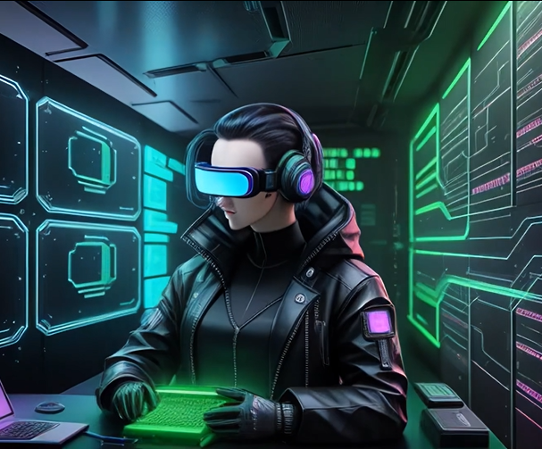
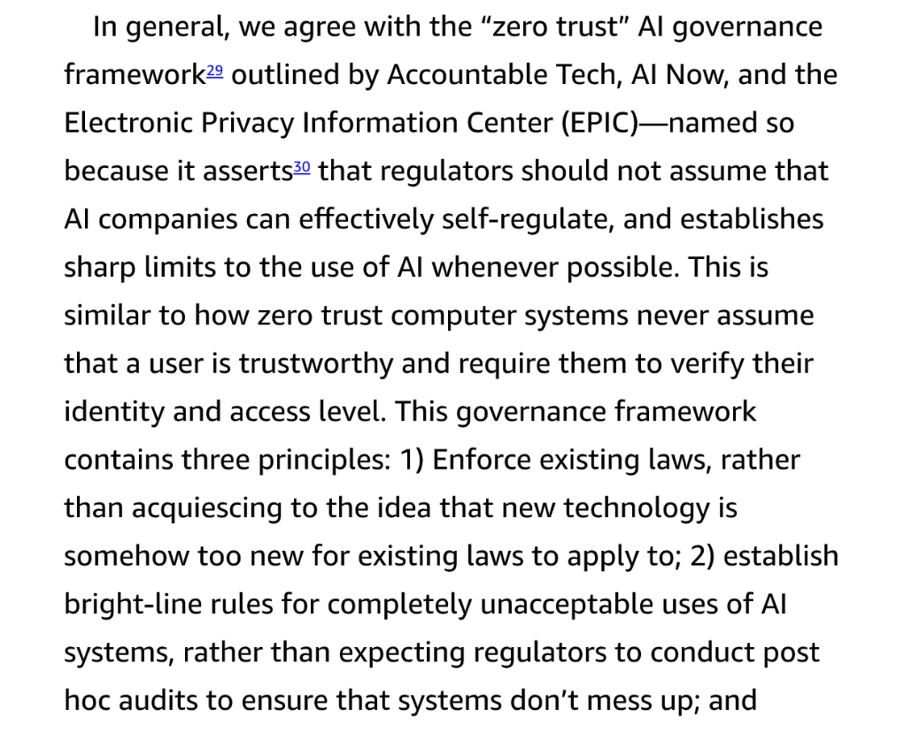
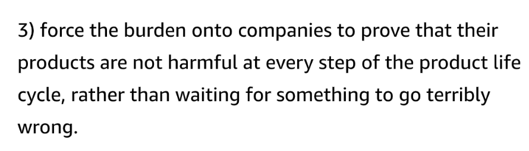
Readings: moved into this week for 2026
from the 2025 Week 14 deck — Noble chapter now assigned in Week 7 [vision: Quotes Hope Olson's research on bounded search discourses and Venn diagram]
from the 2025 Week 14 deck — Noble chapter now assigned in Week 7 [vision: Text on citation-analysis practices, indexing, and Library of Congress classification]
from the 2025 Week 14 deck — Noble chapter now assigned in Week 7 [vision: Artstor screenshot, Figure 5.5 caption on Damali Ayo's 'Rent-A-Negro']
from the 2025 Week 14 deck — Noble chapter now assigned in Week 7 [vision: Chapter page header 'The Future of Knowledge in the Public', page 149, on search/AI]
from the 2025 Week 14 deck — Noble chapter now assigned in Week 7 [vision: Text on 'universe of human knowledge', identity-based searches, search engine bias]